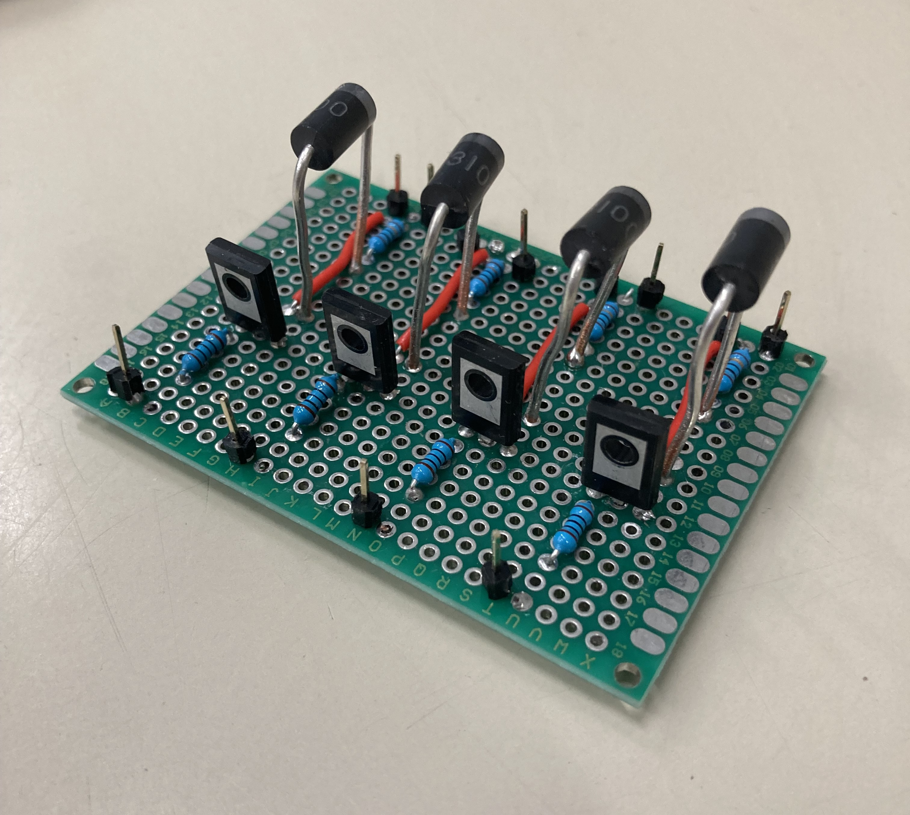
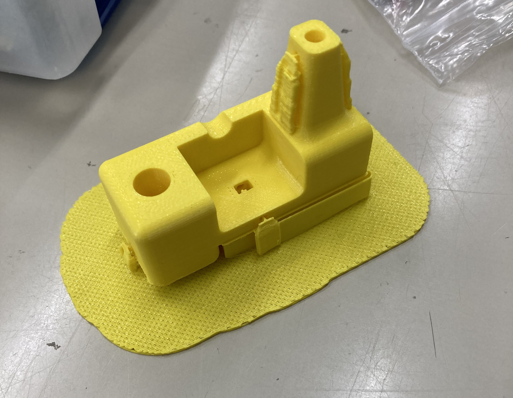

Self-Leveling Rover
2024 | Concept to Product / Electromechanical Design

Overview
This project was built to test the feasibility of pre-emptive suspension. Instead of reacting after a bump, active suspension detects terrain variations ahead of the vehicle and compensates in real time for a much smoother ride. From initial concept to final assembly, this project was solely my own idea, and while it didn't work perfectly, it was an incredible learning experience.
The concept relied on two front-mounted Sharp IR sensors to identify and map depth changes ahead of the chassis. By pairing that terrain depth profile with vehicle velocity and integrated position data from a 3-axis accelerometer, the system calculated the target height for each wheel. From there, I used Hookean spring equations, classical dynamics, and electromagnetism to calculate the exact current needed for each electromagnet. I also implemented a closed-loop feedback controller used a 3-axis gyroscope to correct pitch errors on the fly. All processing was handled onboard by an Arduino Uno (which perhaps should have been an RPi), with remote driving commands sent over a local network using an ESP32 breakout board. Power management was a constant challenge; generating a strong enough field required a large onboard battery pack which adds weight, demonstrating that engineering involves weighing tradeoffs. That level of power necessitated a custom board with automotive-grade MOSFETs to control high-current switching to each magnet. This was my first real dive into KiCad schematic design and PCB layout, serving as the perfect bridge into mechatronics by combining hands-on mechanical, electrical, and software design.
Key Deliverables & Specs
- Accurately map terrain height
- Use telemetry to obtain vehicle position
- Generate magnetic fields producing 2 N of force
- Remotely operate from a distance of up to 30 m
Tools Used
- KiCad (Schematic Capture & PCB Layout)
- Arduino C++
- ESP32 (Wi-Fi/Networking)
- Sensor Fusion (IR & IMU)
- Onshape (for 3D printing)
Images

